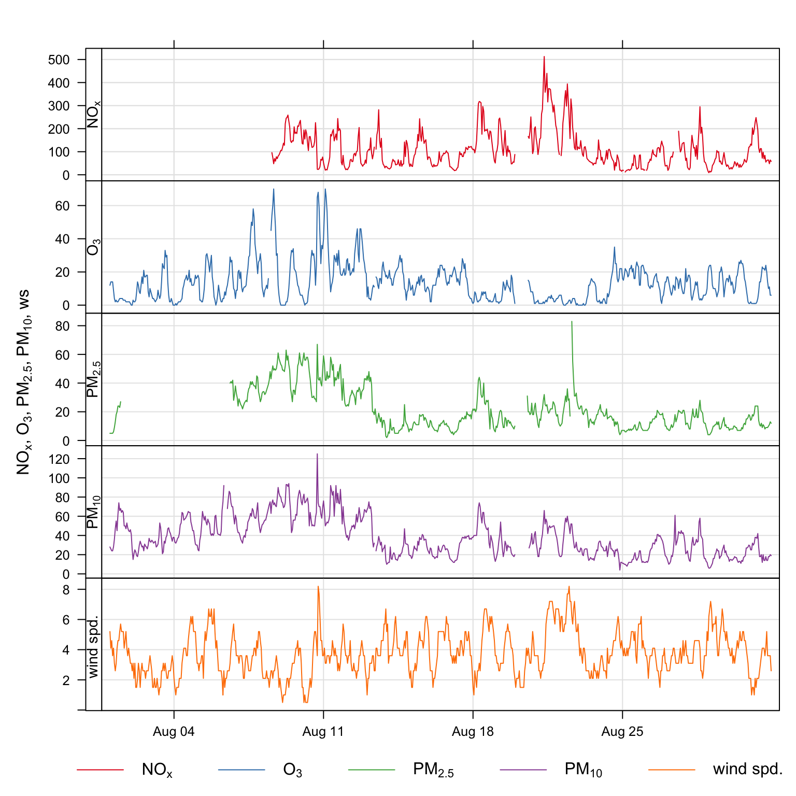
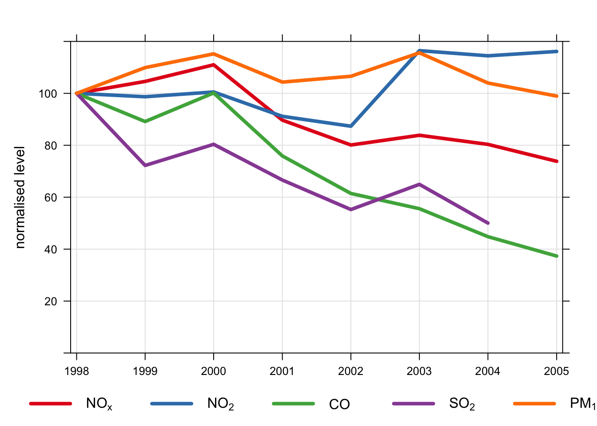
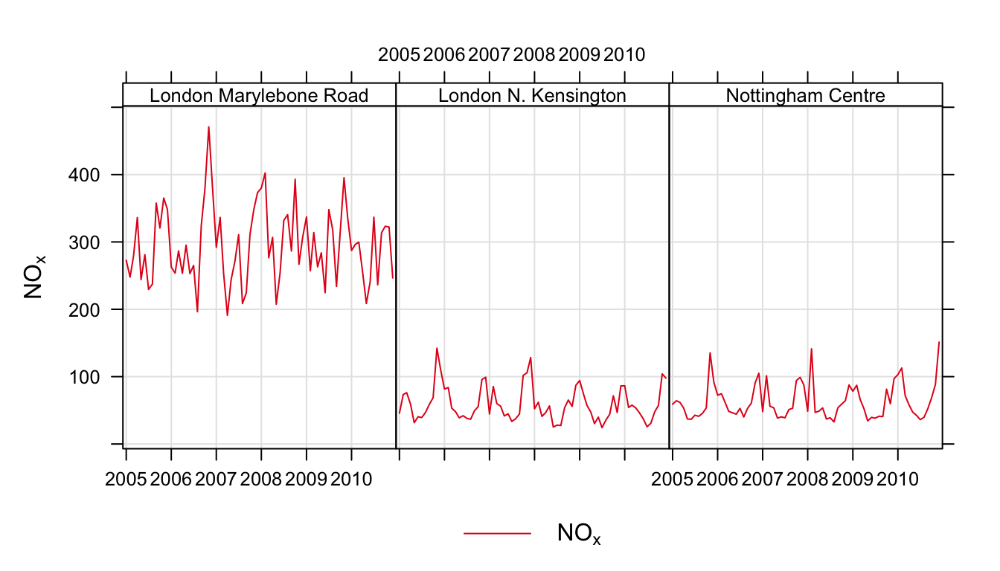
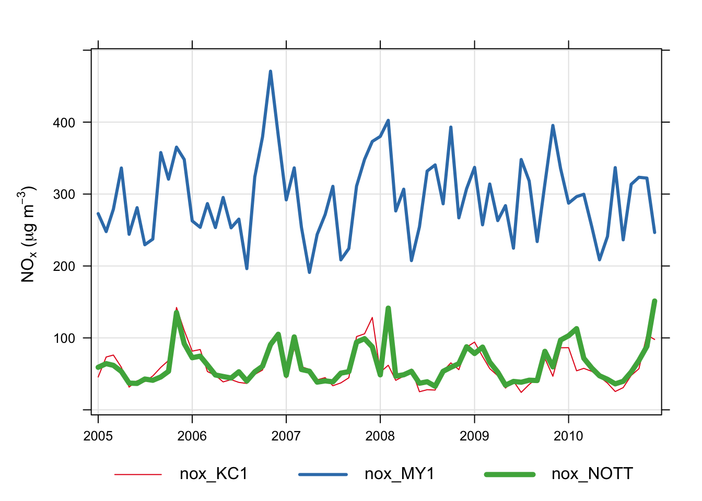

timePlot(mydata,
pollutant = c("nox", "o3"),
y.relation = "free")11 Time series plots
11.1 Background
The timePlot function is designed to quickly plot time series of data, perhaps for several pollutants or variables. This is, or should be, a very common task in the analysis of air pollution. In doing so, it is helpful to be able to plot several pollutants at the same time (and maybe other variables) and quickly choose the time periods of interest. It will plot time series of type Date and hourly and high time resolution data.
With packages such as ggplot2 it is very easy to plot time series. However, there are a few enhancements in timePlot such as flexible time-averaging and adding annotations for wind speed and direction that make it useful in some situations.
The function offers fine control over many of the plot settings such as line type, colour and width. If more than one pollutant is selected, then the time series are shown compactly in different panels with different scales. Sometimes it is useful to get and idea of whether different variables ‘go up and down’ together. Such comparisons in timePlot are made easy by setting group = TRUE, and maybe also normalise = "mean". The latter setting divides each variable by its mean value, thus enabling several variables to be plotted together using the same scale. The normalise option will also take a date as a string (in British format dd/mm/YYYY), in which case all data are normalise to equal 100 at that time. Normalising data like this makes it easy to compare time series on different scales e.g. emissions and ambient measurements.
timePlot works very well in conjunction with selectByDate, which makes it easy to select specific time series intervals. See Section 25.1 for examples of how to select parts of a data frame based on the date.
Another useful feature of timePlot is the ability to average the data in several ways. This makes it easy, for example, to plot daily or monthly means from hourly data, or hourly means from 15-minute data. See the option avg.time for more details and Section 25.5 where a full description of time averaging of data frames is given.
11.2 Examples of time series plotting
A full set of examples is shown in the help pages — see ?timePlot for details. At the basic level, concentrations are shown using a simple call e.g. to plot time series of NOx and O3 in separate panels with their own scales.
Often it is necessary to only consider part of a time series and using the openair function selectByDate makes it easy to do this. Some examples are shown below.
To plot data only for 2003:
timePlot(selectByDate(mydata, year = 2003),
pollutant = c("nox", "o3"),
y.relation = "free")Plots for several pollutants for August 2003, are shown in Figure 11.1.
library(openair)
library(tidyverse)
timePlot(selectByDate(mydata, year = 2003, month = "aug"),
pollutant = c("nox", "o3", "pm25", "pm10", "ws"),
y.relation = "free")
timePlot and the selectByDate functions. The data shown are for August 2003.Some other examples (not plotted) are:
## plot monthly means of ozone and no2
timePlot(mydata, pollutant = c("o3", "no2"), avg.time = "month",
y.relation = "free")
## plor 95th percentile monthly concentrations
timePlot(mydata, pollutant = c("o3", "no2"), avg.time = "month",
statistic = "percentile", percentile = 95,
y.relation = "free")
## plot the number of valid records in each 2-week period
timePlot(mydata, pollutant = c("o3", "no2"), avg.time = "2 week",
statistic = "frequency", y.relation = "free")An example of normalising data is shown in Figure 11.2. In this plot we have:
Averaged the data to annual means;
Chosen to normalise to the beginning of 2008;
Set the line width to 4 and the line type to 1 (continuous line);
Chosen to group the data in one panel.
Figure 11.2 shows that concentrations of NO2 and O3 have increased over the period 1998–2005; SO2 and CO have shown the greatest reductions (by about 60%), whereas NOx concentrations have decreased by about 20%.
timePlot(mydata,
pollutant = c("nox", "no2", "co", "so2", "pm10"),
avg.time = "year", normalise = "1/1/1998",
lwd = 4, lty = 1,
group = TRUE, ylim = c(0, 120))
Another example is grouping pollutants from several sites on one plot. It is easy to import data from several sites and to plot the data in separate panels e.g.
## import data from 3 sites
aq <- importAURN(site = c("kc1", "my1", "nott"),
year = 2005:2010)
## plot it
timePlot(aq, pollutant = "nox",
type = "site",
avg.time = "month")
Using the code above it is also possible to include several species. But what if we wanted to plot NOx concentrations across all sites in one panel? An example of how to do this is shown below. Note, in order to make referring to the columns easier, we will drop the full (long) site name and use the site code instead.
## first drop site name
aq <- select(aq, -site)
## now reshape the data using the tidyr package
aq <- pivot_wider(aq, id_cols = date,
names_from = code,
values_from = co:air_temp)
names(aq) [1] "date" "co_KC1" "co_MY1" "co_NOTT"
[5] "nox_KC1" "nox_MY1" "nox_NOTT" "no2_KC1"
[9] "no2_MY1" "no2_NOTT" "no_KC1" "no_MY1"
[13] "no_NOTT" "o3_KC1" "o3_MY1" "o3_NOTT"
[17] "so2_KC1" "so2_MY1" "so2_NOTT" "pm10_KC1"
[21] "pm10_MY1" "pm10_NOTT" "pm2.5_KC1" "pm2.5_MY1"
[25] "pm2.5_NOTT" "v10_KC1" "v10_MY1" "v10_NOTT"
[29] "v2.5_KC1" "v2.5_MY1" "v2.5_NOTT" "nv10_KC1"
[33] "nv10_MY1" "nv10_NOTT" "nv2.5_KC1" "nv2.5_MY1"
[37] "nv2.5_NOTT" "ws_KC1" "ws_MY1" "ws_NOTT"
[41] "wd_KC1" "wd_MY1" "wd_NOTT" "air_temp_KC1"
[45] "air_temp_MY1" "air_temp_NOTT"The final step will make columns of each site/pollutant combination e.g. nox_KC1, pm10_KC1 and so on. It is then easy to use any of these names to make the plot (with a few plotting option enhancements):
timePlot(aq,
pollutant = c("nox_KC1", "nox_MY1", "nox_NOTT"),
avg.time = "month", group = TRUE,
lty = 1, lwd = c(1, 3, 5),
ylab = "nox (ug/m3)"
)
An alternative way of selecting all columns containing the character ‘nox’ is to use the grep command. For example:
If wind speed ws and wind direction wd are available they can be used in plots and shown as ‘wind vectors’. Plotting data in this way conveys more information in an easy-to-understand way, which works best for relatively short time periods e.g. a pollution episode lasting a few days. As an example Figure 11.5 shows the first 48 hours of NOx and NO2 data with wind arrows shown. The arrows are controlled by a list of option that control the length, shape and colour of the arrows. The maximum length of the arrow plotted is a fraction of the plot dimension with the longest arrow being scale of the plot x-y dimension. Note, if the plot size is adjusted manually by the user it should be re-plotted to ensure the correct wind angle. The list may contain other options to panel.arrows in the lattice package. Other useful options include length, which controls the length of the arrow head and angle, which controls the angle of the arrow head. Wind vector arrows can also be used with the scatterPlot function.